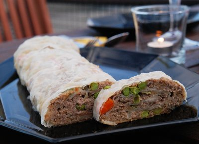

| Zutaten für 4 Personen: | |
| 300 g | Hackfleisch |
| 100 g | Karotten und Erbsen |
| 1 | Semmel |
| 1 | Ei |
| 1 | Zwiebel |
| 1 | Gewürzgurke |
| Salz, Pfeffer | |
| 2 | Strudelblätter gezogen |
Schüssel bereitstellen um die Zutaten zu vermengen.
Zwiebel hacken.
Semmel einweichen.
Zwiebel rösten
Alle Zutaten in der Schüssel gut vermischen, auf den gezogenen Strudelteig verteilen. Die seitlichen Ränder einschlagen, einrollen, sofort mit Fett bestreichen, auf einem gut befetteten Backblech bei 200°C ca. 35 Minuten backen.
Herbert Eigenmann, Code: FLD
Foto von Sandra Keller
Hat super geschmeckt. Die Strudelblätter muss man natürlich als fertige Strudelblätter kaufen, das gibt es aber zum Glück in besseren Migros Läden. Ich verwendete Erbsen und Rüebli aus dem Tiefkühlbeutel. Sandra würde eher 3 Sterne geben, da sie meinte, der Strudel sei etwas auf der trockenen Seite und würde entsprechend von einer saftigen Beilage profitieren. RE 2.8.2008
@LINKBACK_TAG@ @WAKELOCK@